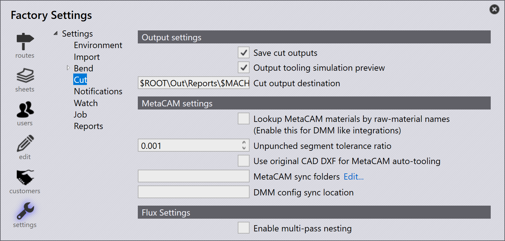

Cut

輸出設定
保存切割輸出 - 只有在工具為 OK 且已啟用並設定這些匯出設定時，才會儲存工具結果。啟用此選項以儲存 Cut NC。
輸出模具模擬預覽 - 啟用此選項以隨其他輸出一起產生工具模擬預覽。這是雷射/沖孔工具的短 GIF 動畫。
切割輸出目標位置 - 這是要儲存 NC 和報告的目的地。
MetaCAM 設定
按原材料名稱尋找 MetaCAM 材料+ (啟用此項以進行類似 DMM 的整合) - 當此樣式啟用時，TruSmartCAM 會依原材料名稱產生頁面，並在自動工具時將它們指派給零件。
MetaCAM 同步資料夾 - 此 Cut 設定用於新增其他 MetaCAM 資料夾，這些資料夾應在使用 config-push Monitor 命令時與 config.dat 一起同步。config-push 會將本機檔案儲存至 TruSmartCAM 儲存庫，當 MetaCAM (重新)啟動時會在其他電腦上下載。除了 Tools 之外，當為 MetaCAM 機器執行自動工具時，Engine 電腦應會自動同步它，某些其他安裝特定的候選項目是 Etc、Reports 和 Machines 資料夾。
DMM 配置同步位置 - 這是要設定的 Dynamic Machine Management 設定同步的位置。
Flux 設定
啟用多迴圈排樣 - 這將使雷射能夠在相同輪廓上切割多次（適用於較厚的材料）。